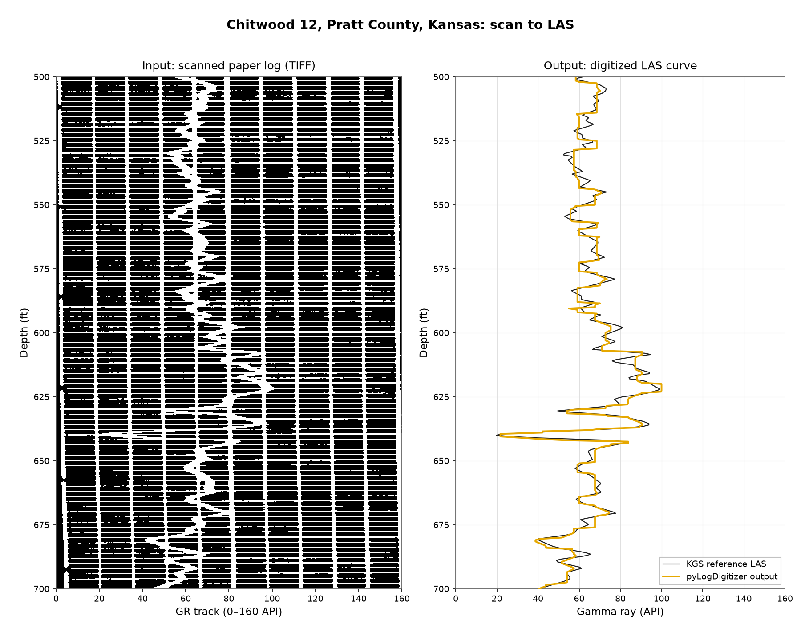
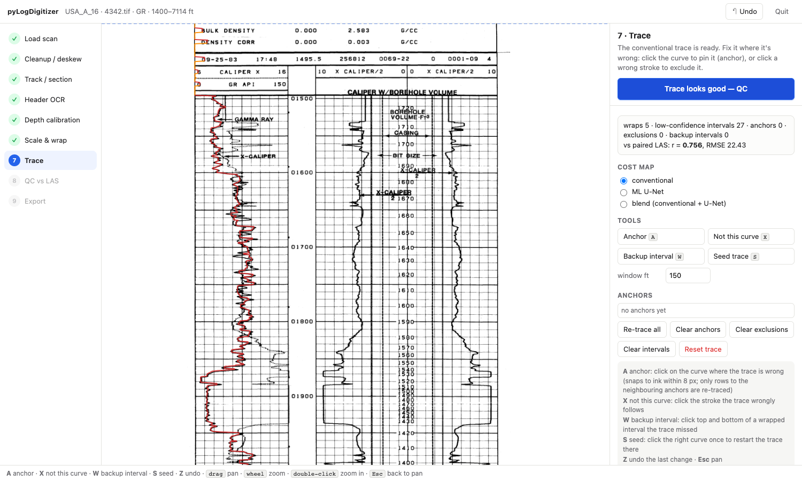
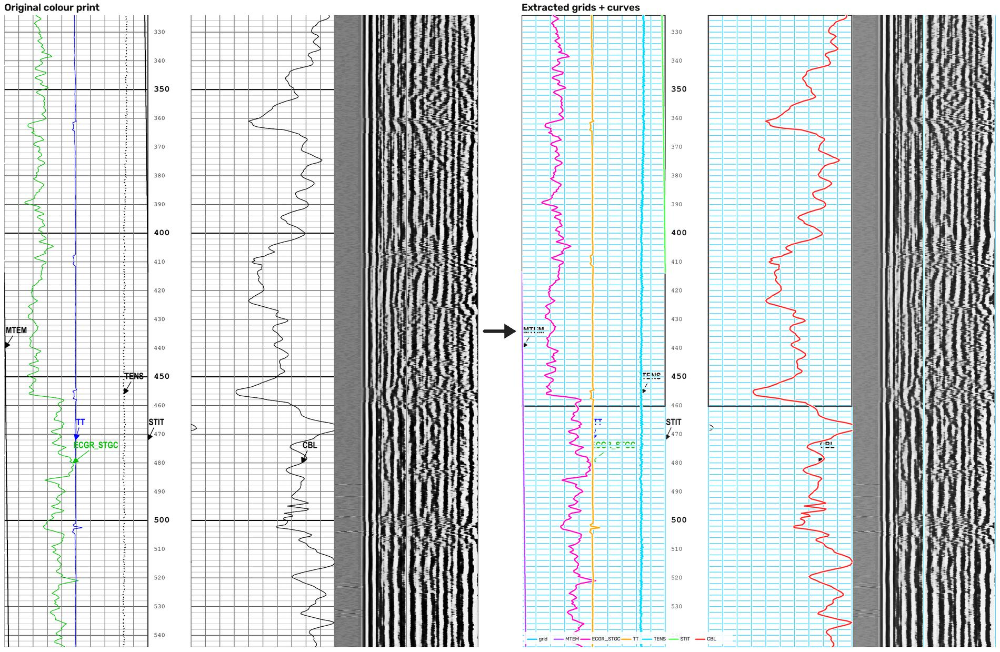

Python · Well-log prints
pyLogDigitizer
pyLogDigitizer turns inked paper scans (TIFF) and clean colour digital-print PDFs into LAS files, with a local browser app to check and fix every step. Nothing leaves your machine.
Overview
pyLogDigitizer converts two kinds of well-log print into LAS files: inked paper scans (TIFF) and clean colour digital-print PDFs, using shared scale, depth, null-value, and LAS export code. The scan workflow locates tracks and grids, reads depth labels, and traces curve ink; the digital-print workflow reads coloured vector paths directly, without rasterizing them or applying a scan model. Overlay QA draws grids and traces back onto the original print. A local browser editor supports review and correction before export, including curves that leave a track and return on a backup scale. All processing stays on your own machine; nothing is uploaded.
The package is under active development. Many functions are experimental and not fully validated; inspect overlays and exported curves before using the results.

Examples




Scan examples are from the Kansas Geological Survey. The colour digital-print example is the public Utah FORGE 78B-32 CBL (GDR / OpenEI).
Key features
Inked scan workflow
Detect tracks and grids, deskew scans, read depth labels, and separate curve ink with a bundled ONNX segmenter before tracing with a Rust engine or Python fallback.
Colour digital-print PDFs
Extract coloured vector paths directly, identify per-track grids and scales, and digitize curves without rasterizing the PDF or using the scan model.
Overlay quality checks
Draw snapped grid lines and traced curves on the original scan or rendered PDF page to check alignment by eye.
Local browser editor
Pin and drag anchors, exclude regions, re-trace curves, adjust track edges and scales, and correct header text before export.
Backup scales and nulls
Unwrap curves that run off a track onto a backup scale; handle log scales and null values where a fixed-scale curve is clipped.
LAS 2.0 export
Write depth-calibrated LAS 2.0 curves at 0.5 ft spacing by default, with 0.25 ft spacing available.
Installation
pip install pylogdigitizerRequires Python 3.10 or newer. Review the README for the scan and digital-print PDF workflows.
Citation
Lai, L.S.-H. (2026) pyLogDigitizer. Zenodo, https://doi.org/10.5281/zenodo.23832013
pyLogDigitizer is under the GNU Affero General Public License 3.0 or later.